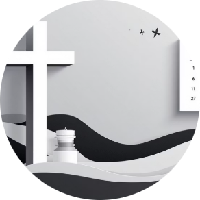

Боль сети
Что закрываем
Текучка и переобучение. Слабое знание ассортимента и акций. Нет контроля, кто готов к смене. Очное обучение не объезжает все точки. Ошибки на кассе и в сервисе.
Академия УМ · сеть «У Михалыча»
Делаем мир крепче
Семь блоков жизни сотрудника: от первого дня до пульса команды. Один стандарт на магазин, РЦ и офис. Финиш контура — 31 декабря 2026.
База, с которой начинаем
Обучение встроено в работу сети: новичок быстрее выходит в смену, знания не уходят с человеком, стандарт один на все точки. Семь блоков ниже — жизнь сотрудника от входа до обратной связи. Внедряем до 31.12.2026. Часть уже сделана.
Боль сети
Текучка и переобучение. Слабое знание ассортимента и акций. Нет контроля, кто готов к смене. Очное обучение не объезжает все точки. Ошибки на кассе и в сервисе.
Результат
Новичок продаёт раньше. Один сервис на магазины. Акции доходят до каждого. Видно обученность по людям и точкам. Знания остаются в Академии, не в головах.
Жизнь сотрудника · внедрение до 31.12.2026
Каркас блоков уже собран. Дальше наполняем и включаем в календарь — не «ещё одна презентация», а рабочий контур.
сделано · сентябрь
Блок 1
Зачем Академия сети, боли магазинов, роли. Уже зафиксировано: главная, структура, эта карта. До 31.12 держим формулировку на всех входах и в навигаторе БЗ.
в работе
Блок 2
Уже есть: 19 тем старта, книга сотрудника, оргструктура, анкета, чаты. Внедряем как в ритейле: после кадров человек сразу на точку. Пять дней — пять модулей: выучил → сразу делает с наставником в смене. Офис больше не выдаёт «готового продавца».
в работе · СТМ до 31.10
Блок 3
Уже идёт: тест СПК, каркас СТМ. До 31.10 — запуск СТМ. Дальше — ежемесячные микрокурсы по сезону и новинкам (не скайп-экзамен). Если растут претензии по теме — сразу короткий курс: так учим от боли гостя, не «по плану ради плана».
ноябрь
Блок 4
Микрокурс «зачем мне это в чеке»: допродажа, возражения, лояльность. Плюс видео-зеркало — короткие сценки из нашей смены, человек узнаёт себя. Без учёбы на госте. После СТМ — обязателен продавцу и СПК, входит в декабрьский тест.
ноябрь
Блок 5
Как внедряем: чек-лист испытательного и ИПР. Наставник ведёт по нему. Опытные сами хотят учить — новичок их смена, не «готовый продукт из офиса». Пилот в ноябре, к декабрю шаблон на роли.
частично сделано
Блок 6
Сентябрь — СПК. Октябрь — кладовщики РЦ. Ноябрь — кассиры. Декабрь — аттестация кладовщиков сети: волны в рабочие дни, закрытие до 30 декабря (31 декабря — нерабочий).
декабрь
Блок 7
Как внедряем: короткий опрос (настроение, затык, кому нужна помощь). Пилот на одном кусте в начале декабря, затем сеть. Чтобы увидеть тяжесть до того, как человек уйдёт.
Практика ритейла · ВкусВилл
Берём механику, не копируем бренд. У них: теория онлайн, практика в магазине, тест без экзамена, курс от жалобы гостя. У нас — то же в Академии УМ до 31.12.
Цель
Обращения гостей по сервису вниз. Новичок полезен с первого дня на точке, а не после двух дней в офисе.
Адаптация 5 дней
После кадров человек сразу в магазин. Пять модулей с наставником. Опытные отвечают за новичка и сами держат стандарт.
5 траекторий
Продавец, кассир, СПК, РЦ, офис. Каждый учит то, что нужно в его смене.
Микрокурс
Короткий навык + личная выгода: средний чек, премия, меньше очереди. Как у них курс про допродажу, только на наши товары.
Зеркало
Короткое видео: как было / как надо. Человек узнаёт себя в разговоре с гостем — без публичного разбора на планёрке.
Игра, не экзамен
Тест СТМ и сезонных товаров — на понимание. Можно открыть шпаргалку в смене. Чемпионаты кустов — кто быстрее закрыл модуль.
От боли гостя
Выросли претензии по теме — короткий модуль. Сезон лопат, дождеприёмник, рассрочка: учим к моменту, не «когда-нибудь».
Каждый месяц
Не рассылка «прочитай и ответь по памяти». Курс на платформе + вопросы на смысл. Знает, где найти, когда гость спросит.
Вход без страха
Знакомство с Академией — добровольный конкурс форматов. Потом уже обязательные траектории. Особенно важно тем, кто не сидит в приложениях.
Зачем Академия
Издержки
Онбординг, инструкция и чек-лист наставника сокращают путь до самостоятельной смены. Человека рядом не бросаем, брак адаптации ниже.
Масштаб
Одинаковые регламенты, обучения и тесты для розницы, РЦ и офиса. Новый магазин копирует контур, а не собирает знания из голов.
Капитал
Регламенты, шпаргалки и обучения живут в Битриксе. Нет незаменимых: опыт команды превращён в страницы, тесты и чек-листы.
Сервис
Учим коротко и сразу на точке. Цель как у сильных сетей: обращения по сервису вниз, новичок полезен с первого дня, а не «через две недели после офиса».
Формат
Микрокурс, сцена «зеркало», игра вместо зубрёжки. Человек знает, где найти ответ в смене. Вопросы в конце — на смысл, не на память.
Источник приёмов: кейс ВкусВилл, New Retail. Берём механику, перекладываем на «У Михалыча».
Календарь · 7 блоков до 31.12.2026
Сейчас 28 сентября — 4 октября. Дальше: СТМ до 31.10, в октябре параллельно тест кладовщиков РЦ, в ноябре — кассиры сети (поле 5 и 6 ноября в магазине Решетникова, Березняки). В декабре — аттестация кладовщиков сети по производственному календарю: слоты только в рабочие дни, закрытие до 30 декабря. 31 декабря 2026 — нерабочий (перенос выходного с 4 января).
Сделано Сейчас делаем Дальше в плане
Сентябрь · СПК + старт СТМ
Неделя 1
Неделя 2
Неделя 3
Неделя 4
Октябрь · СТМ + кладовщики РЦ
Неделя 5
Неделя 6
Неделя 7
Неделя 8 · запуск
Ноябрь · кассиры сети
Неделя 9 · поле
Неделя 10
Неделя 11
Неделя 12
Декабрь · аттестация кладовщиков сети
Неделя 13
Неделя 14
Неделя 15
Неделя 16
Раздел 1
Успешная адаптация — залог долгосрочного сотрудничества. Структурированный процесс, чтобы новичок быстро освоился и почувствовал себя частью команды «У Михалыча».
Книга сотрудника
Миссия, ценности, история, правила, культура и ключевые контакты — всё в одном руководстве на каждый день.
Оргструктура
Схема компании с ролями отделов. Понятно, как выстраиваются взаимодействия и к кому идти.
Анкета-приветствие
Интересы и предпочтения новичка, чтобы адаптация была персональной, а не конвейером.
Группы и чаты
Список корпоративных групп и чатов с назначением. Новости, проекты и обсуждения — без «а куда писать».
Поддержка и мотивация
Вклад каждого сотрудника важен. Академия — не только обучение, но и условия, в которых человек остаётся и растёт.
Дополнительные дни отпуска для особо отличившихся — чтобы полноценно отдохнуть и восстановиться.
Привлекайте талантливых друзей в команду и получайте бонусы за каждого успешного кандидата.
Продукция компании по эксклюзивной цене, доступной только сотрудникам.

Добровольное медицинское страхование с удобной рассрочкой платежей.
Каждый год поздравляем, дарим подарок и создаём праздничное настроение.
По запросу подтверждаем профессиональные качества и достижения в компании.
В период адаптации
Адаптация — это не только знакомство с компанией, но и активное обучение. Еженедельные модули и тесты, чтобы уверенно пройти старт.
01
Каждая неделя — свой блок под должность: видео, текстовые инструкции и практические задания.
02
В конце недели короткий тест. Видно, что усвоено, где пробел — и его закрываем сразу, не через полгода.
03
Наставник и HR разбирают результаты, отвечают на вопросы и держат человека в контуре.
04
Кейсы как на реальной смене. Знание сразу применяется, а не лежит «прочитал и забыл».
Эффективность
Внутри отдела — стандартные алгоритмы для отчётов, совещаний и обмена информацией: общие шаблоны, меньше потерь. С другими отделами — зоны ответственности и каналы связи, регламенты межфункциональных запросов, без дублей и «я думал, это не мы».
Автоматизация рутины. Планирование: помидоро и матрица Эйзенхауэра. Цифровые инструменты: CRM, задачи, облако. Внутренние воркшопы и обмен практиками — компетенция растёт в команде, не в одиночку.
Система управления контентом
Каждый сотрудник всегда имеет доступ к самой свежей и проверенной информации.
01
У статьи есть автор, дата создания и последней редакции. Прозрачно, кто отвечает за актуальность.
02
Все существующие материалы собираем в одну базу знаний, доступную в любое время.
03
Список ролей и иерархия: какой контент обязателен для какой позиции.
04
По каждому направлению: виды обучения, сроки, контроль прохождения и тестирование.
05
Новые материалы приходят задачей-шаблоном в Битрикс24 — оперативно добавляем и актуализируем.
Перевод и увольнение
Перевод, в том числе офис–магазины, регламентирован. Увольнение — с уважением и анонимной анкетой. Рекомендательное письмо по запросу.
Правила работы в компании
Софты и документы
Обучение
Правила работы с программами — отдельная страница. Не «спроси у соседа».
Обучение
Правила работы с документами. 70% операций общие — учим всех одним контуром.
Куда кладём
SLA
Регламент, шаблон страницы, черновик, 8–12 вопросов в банк должности.
Публикация, тест, постановка в календарь, сообщение руководителю.
Правило страницы
Зачем · как делать · частые ошибки · кому обязательно · вопросы теста · дата актуализации · владелец раздела.
СПК → РЦ → кассиры → кладовщики сети
7 сентября — 4 октября
Банк, запуск, две волны, досдача. Явка 100%. Итог супервайзерам и в Ленту.
Октябрь
Тест и график уже в Академии: тест кладовщика РЦ · график слотов октябрь 2026. Волны по слотам, явка, итог руководителю РЦ.
Ноябрь
Как СПК: список, банк, волны, досдача. Сначала полная книга кассы: 5 и 6 ноября — два рабочих дня в магазине Решетникова, Березняки (смотреть работу и ошибки). Затем банк и тест по сети.
7–25 декабря · будни
Аттестация магазинных кладовщиков (это не РЦ: те уже в октябре). Волна 1: 7–11 декабря. Волна 2 и досдача: 14–18 и 21–25 декабря. На субботы, воскресенья и 31 декабря слоты не ставим.
7–18 декабря
Параллельно с кладовщиками сети. Кассиры уже сданы в ноябре. СПК сдают повтор через три месяца после сентября.
28–30 декабря
Закрыть хвосты аттестации до 30 декабря. Кто прошёл — уровень зафиксирован. Кто нет — учится по тем же страницам БЗ. 31 декабря — нерабочий, новых слотов нет.
Команда Академии УМ
Кто
СПК, старшие РЦ, категорийщики, сервис B2B. Список и мотивация — отдельная страница БЗ.
Чем
День 1, неделя, 14 дней, 30 и 90. Документы, видео, шпаргалки наставника лежат рядом с чек-листом.
Связка
Новичок не висит в воздухе. Через 90 дней должность входит в общий квартальный зачёт.
Карта закрыта 31 декабря, если
1
Формулировка на всех входах. Сеть понимает, зачем Академия.
2
Новичок идёт по маршруту и чек-листу наставника, не «спроси у соседа».
3
СТМ запущен. Регламенты в БЗ. Поставщики и свои эксперты в календаре.
4
Модуль в БЗ обязателен продавцу и СПК, входит в декабрьский тест.
5
ИПР и испытательный — шаблон на роли, пилот пройден.
6
СПК — сентябрь. Кладовщики РЦ — октябрь. Кассиры — ноябрь. Кладовщики сети — аттестация в декабре, закрытие до 30.12.
7
Короткий опрос по сети. Видно, где тяжело, до того как человек уйдёт.